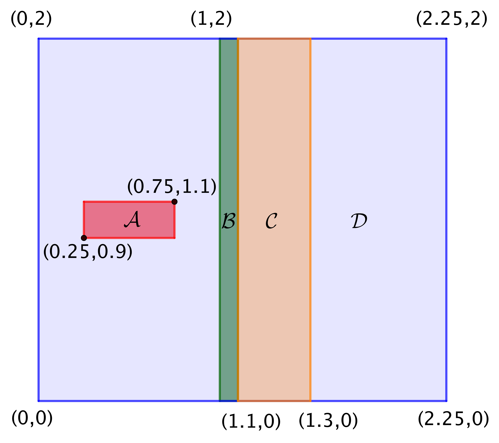
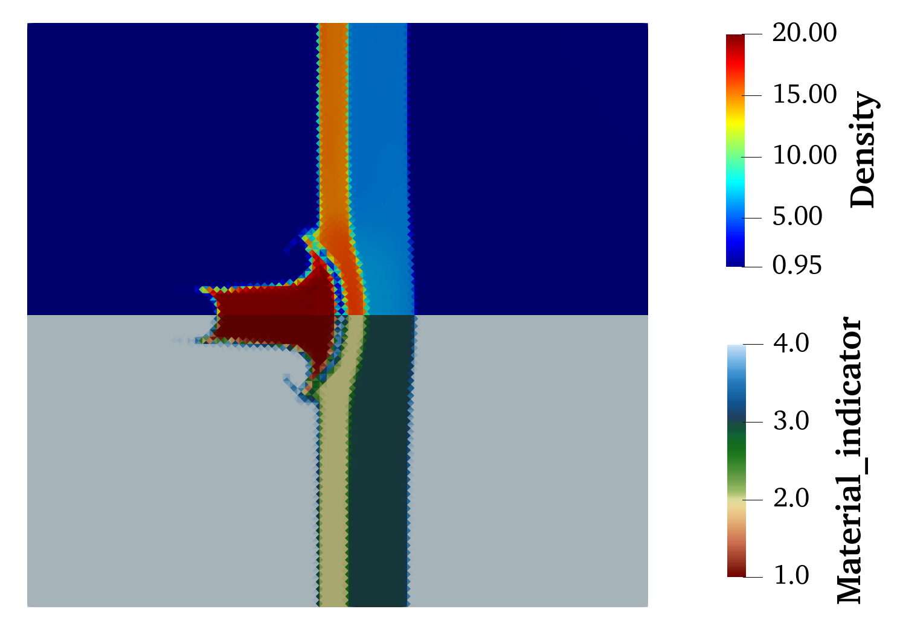
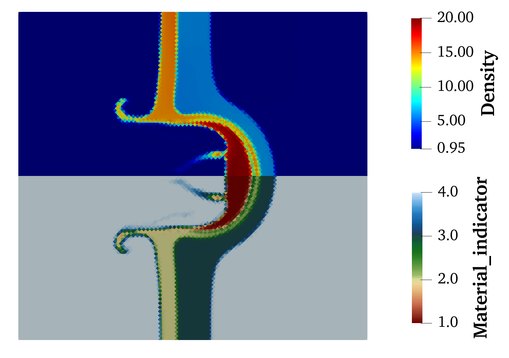
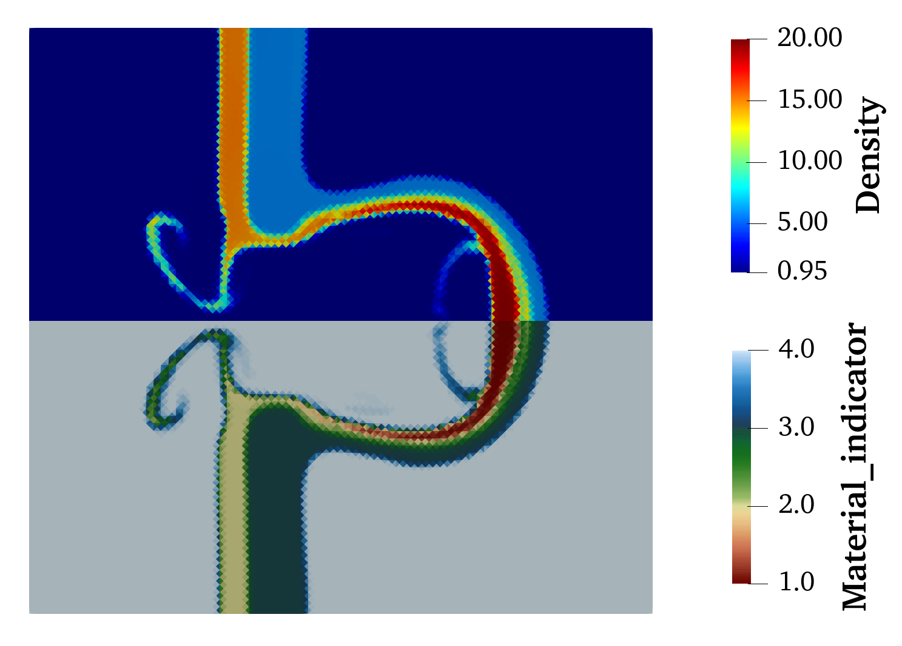

Inciter: Example set up for the four material gas impact problem
This example runs the Multi-material DG hydrodynamics algorithm for the four material gas impact problem from Pandare et al. (Comp. Fluids 2021). It uses a second-order finite volume method for spatial discretization, with THINC material interface reconstruction. The problem is configured using the user-defined problem class with box-type initial conditions, and symmetric boundary conditions on all domain boundaries. For further details about the numerical method see Pandare et al. (Comp. Fluids 2021)

Initial conditions
Control file
# vim: filetype=sh: # This is a comment # Keywords are case-sensitive title "Gas impacting two slabs problem" inciter term 10.0 cfl 0.75 ttyi 25 # TTY output interval scheme p0p1 limiter vertexbasedp1 partitioning algorithm mj end multimat physics veleq depvar u prelax 1 # finite-rate pressure relaxation prelax_timescale 0.1 # time scale for pressure relaxation intsharp 1 # THINC interface reconstruction intsharp_param 2.5 # interface steepness parameter nmat 4 material gamma 50 1.66666667 1.249 1.4 end # ratio of specific heats cv 0.32539682 28.7 200.0 717.5 end # specific heats at constant volume pstiff 0.0 0.0 0.0 0.0 end # stiffness parameter end ic # background materialid 4 end pressure 1.0 end temperature 0.0034843206 end velocity 0.0 0.0 0.0 end # slab-1 box materialid 2 xmin 1.0 xmax 1.1 ymin -0.5 ymax 2.0 zmin -1.0 zmax 1.0 pressure 1.0 temperature 0.0034843206 end # slab-2 box materialid 3 xmin 1.1 xmax 1.3 ymin -0.5 ymax 2.0 zmin -1.0 zmax 1.0 pressure 1.0 temperature 0.0034843206 end # impactor box materialid 1 xmin 0.25 xmax 0.75 ymin -0.5 ymax 1.1 zmin -1.0 zmax 1.0 pressure 2.0 temperature 0.0062717771 velocity 0.2 0.0 0.0 end end end bc_sym sideset 1 2 3 4 5 6 end end end diagnostics interval 250 format scientific error l2 end field_output interval 2500 var elem material_indicator # material indicator function density # bulk density pressure # bulk pressure specific_total_energy # bulk specific total energy x-velocity # bulk x-velocity y-velocity # bulk y-velocity z-velocity # bulk z-velocity end end end
Example run on 16 CPUs
./charmrun +p16 Main/inciter -c mmimpact4mat.q -i gasimpacthalf_ss6_struc24k.exo -v
Setup screen output
< FACTORY >
---- o ----
* Unknowns data layout (CMake: FIELD_DATA_LAYOUT):
--------------------------------------------------
unknown-major
* PDE factory legend, policy codes:
-----------------------------------
Physics configuration (policy code: p)
A - Advection
D - Advection + diffusion
E - Euler
N - Navier-Stokes
V - Velocity equilibrium
Test problem (policy code: t)
U - User-defined
S - Shear-diffusion
V - Vortical flow
N - Nonlinear energy growth
R - Rayleigh-Taylor
T - Taylor-Green
Z - Zalesak's slotted cylinder
G - Advection of 2D Gaussian hump
C - Advection of cylinder
X - Deformation of cylinder in a vortex
F - Shedding flow over triangular wedge
H - Sod shock-tube
O - Rotated Sod shock-tube
B - Sedov blast-wave
I - Interface advection
A - Advection of 2D Gaussian hump for Euler equations
W - Water-air shock-tube
E - Shock He-bubble problem
D - Underwater explosion problem
* Registered PDEs using continuous Galerkin (CG) methods:
---------------------------------------------------------
Unique equation types : 2
With all policy combinations : 30
Compressible single-material flow : p:EN, t:ABFHNORTUV
Transport : p:AD, t:CGSXZ
* Registered PDEs using discontinuous Galerkin (DG) methods:
------------------------------------------------------------
Unique equation types : 3
With all policy combinations : 21
Compressible multi-material flow : p:V, t:DEHIUW
Compressible single-material flow : p:E, t:ABFHNORTUV
Transport : p:A, t:CGSXZ
< PROBLEM >
---- o ----
* Title: Gas impacting two slabs problem
-----------------------------------------
* Discretization parameters:
----------------------------
Discretization scheme : P0P1+RK
Limiter function : VERTEXBASEDP1
PE-locality mesh reordering : false
Operator-access mesh reordering : false
Local time stepping : false
Number of time steps : 18446744073709551615
Start time : 0
Terminate time : 10
CFL coefficient : 0.75
* Partial differential equations integrated (0):
------------------------------------------------
< Compressible multi-material flow >
dependent variable : u
physics : Velocity equilibrium
problem : User-defined
flux : AUSM
number of materials : 4
finite pressure relaxation : 1
pressure relaxation time-scale : 0.100000
interface sharpening : 1
interface sharpening parameter : 2.500000
number of components : 15
start offset in unknowns array : 0
ratio of specific heats : { 50 1.66667 1.249 1.4 }
specific heat at constant volume : { 0.325397 28.7 200 717.5 }
material stiffness : { 0 0 0 0 }
IC background material id : 4
IC background velocity : { 0 0 0 }
IC background pressure : 1
IC background temperature : 0.00348432
IC box 0 : { 1 1.1 -0.5 2 -1 1 }
IC box 0 material id : 2
IC box 0 density : 0
IC box 0 velocity : { }
IC box 0 pressure : 1
IC box 0 internal energy per unit mass : 0
IC box 0 mass : 0
IC box 0 internal energy per unit volume : 0
IC box 0 temperature : 0.00348432
IC box 1 : { 1.1 1.3 -0.5 2 -1 1 }
IC box 1 material id : 3
IC box 1 density : 0
IC box 1 velocity : { }
IC box 1 pressure : 1
IC box 1 internal energy per unit mass : 0
IC box 1 mass : 0
IC box 1 internal energy per unit volume : 0
IC box 1 temperature : 0.00348432
IC box 2 : { 0.25 0.75 -0.5 1.1 -1 1 }
IC box 2 material id : 1
IC box 2 density : 0
IC box 2 velocity : { 0.2 0 0 }
IC box 2 pressure : 2
IC box 2 internal energy per unit mass : 0
IC box 2 mass : 0
IC box 2 internal energy per unit volume : 0
IC box 2 temperature : 0.00627178
* Input/Output filenames and directories:
-----------------------------------------
Input mesh(es) : { gasimpacthalf_ss6_struc24k.exo }
Volume field output file(s) : out.e-s.<meshid>.<numchares>.<chareid>
Surface field output file(s) : out-surf.<surfid>.e-s.<meshid>.<numchares>.<chareid>
History output file(s) : out.hist.{pointid}
Diagnostics file : diag
Checkpoint/restart directory : restart/
* Output intervals:
-------------------
TTY : 25
Field and surface : 2500
Diagnostics : 250
Checkpoint/restart : 1000
* Output fields:
----------------
Elem field(s) : { density material_indicator pressure specific_total_energy x-velocity y-velocity z-velocity }
Solution contours
Bulk density (top-half) and material indicator (bottom-half) contours for the four material gas impact test:

t = 2.0

t = 5.5

t = 8.5